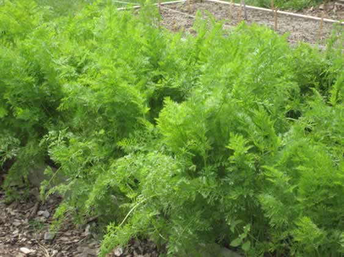
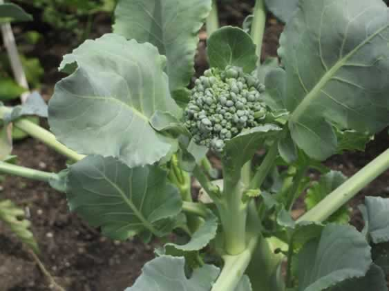
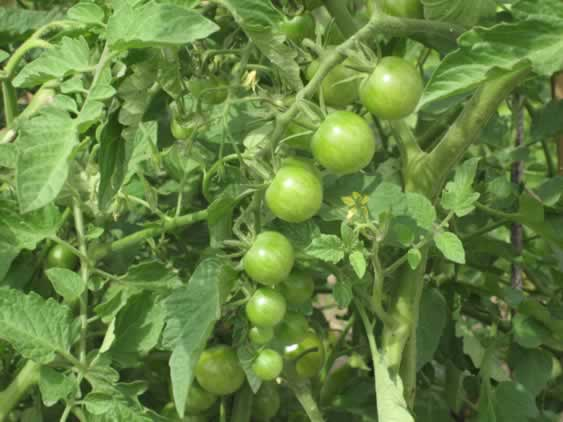

| |
| Carrots |
| Twinkies |
| Avocado |
| Pineapple |
| Turkey Sandwiches |
| Mangoes |
| Sushi |
| Potatoes |
| Other Resources |
If you’ve had science with Janine or Bernadette, you already know you can plant beans and seeds to grow plants, but did you know you can also grow a plant by planting your food? Not all food grows a plant, of course, and some foods have special planting requirements, but you can get a plant to grow from almost any kind of seed. With all of these, you should always do more than one at a time to increase your chances of having a successful plant. Which of the foods on the left do you think will grow when you plant them? Click to see if you're right.
|
| What foods do you think we get from these plants ? Click the plants to find out! | |
|  | |
|  | |
|  |
All photos by Kathleen Gerard except where otherwise noted, most taken in the family garden at the New York Botanical Garden, a great place to visit!
Licensed under Creative Commons Attribution-ShareAlike 3.0